- 路线 1：Ardita（Enge → Sihlcity → Wiedikon → STVA → 高速 → Wollishofen → Kilchberg → Enge）
- 路线 2：Charles（STVA 左转 → Sihlcity → Wollishofen 沿湖 → Kilchberg → Thalwil 上高速 → STVA）
- 路线 3：Jasmin（Enge → Sihlcity → Wollishofen → Kilchberg → 高速 → Wollishofen）
- 路线 4：Julien（Enge → Sihlcity → Thalwil → Lindt → Spital → Wollishofen → Enge）
- 路线 5：Paul（STVA 右转 → Thalwil → Kilchberg → Wollishofen → 高速 → STVA）
考前我系统刷了苏黎世驾校教练 Nils Hommel 在 YouTube 上发布的大量 STVA 真实模拟路考视频（强烈推荐他的频道 Nils Hommel，非常适合考前“云踩点”）。
接下来三篇将这 11 套模拟路考视频复盘按苏黎世地理片区分类整理。本篇聚焦最高频的湖西岸与 A3 高速片区（覆盖 Enge、Sihlcity、Wollishofen、Kilchberg、Rüschlikon、Thalwil），共收录 5 套完整模拟路线（10 段视频）。
路线 1：Ardita（Enge → Sihlcity → Wiedikon → STVA → 高速 → Wollishofen → Kilchberg → Enge）
路线概览：Enge -> Sihlcity -> Wiedikon -> STVA -> Autobahn -> Wollishofen -> Kilchberg -> Autobahn -> Sihlcity -> Enge
Teil 1
- 从 Enge 出发：又是那个前方和左侧都禁止通行的路口，只能右拐。
- Sihlcity 路口右拐（Wiedikon 方向）。
- Wiedikon 附近有两处容易忽略的禁止通行标志：
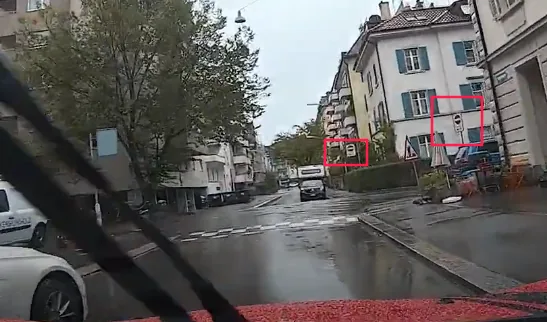
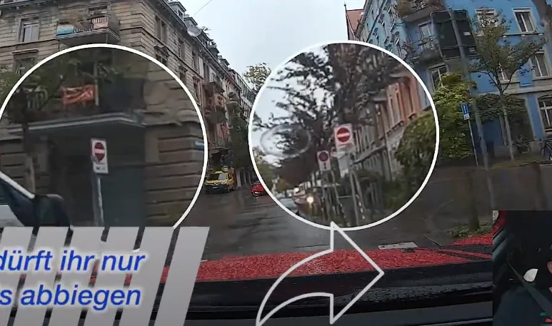
- 这个路口左拐不仅要看对向来车，还要特别注意有没有行人正在过马路！
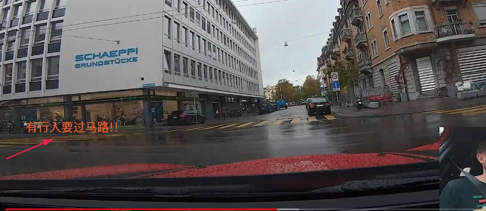
- 回到 STVA 路口 → 上 A3 高速（Chur 方向）→ Wollishofen 下高速。
Teil 2
- 当街道比较窄且没有自行车时，可以适当借用自行车道：
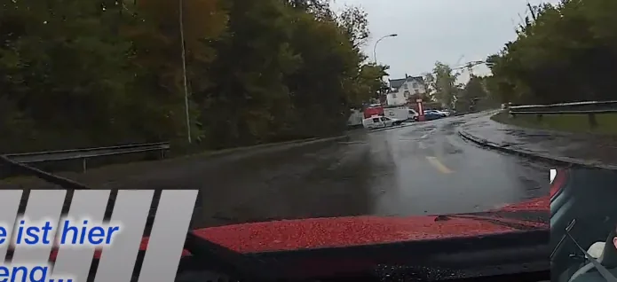
- Wollishofen 开往 Kilchberg（经过那条周日禁止通行的路段）。
- Kilchberg 不明显的路口：要从右侧车道再左拐，同时注意这里也是 Right Priority！
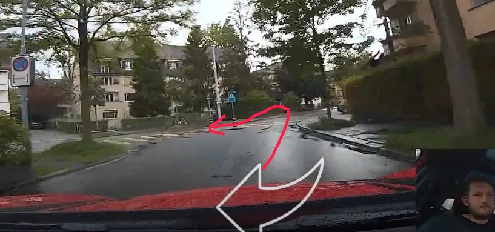
- 从 Kilchberg 上 Autobahn（Zürich City 方向）→ Sihlcity → 路过 Google 办公楼旁 → 返回 Enge。
路线 2：Charles（STVA 左转 → Sihlcity → Wollishofen 沿湖 → Kilchberg → Thalwil 上高速 → STVA）
路线概览：STVA (L) -> Sihlcity -> Wollishofen Seestrasse -> Kilchberg -> Rüschlikon -> Thalwil Autobahn -> STVA
Teil 1
- 出考场左转（Links），在 Wiedikon 前再次左拐。
- 遇到前方大车准备掉头时，离远点停下等它完成掉头：
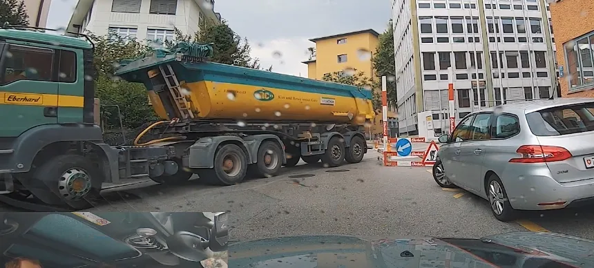
- 注意这里的禁止通行标志；另外转进去之后是很长一段没有额外重复提醒的
30 Zone：
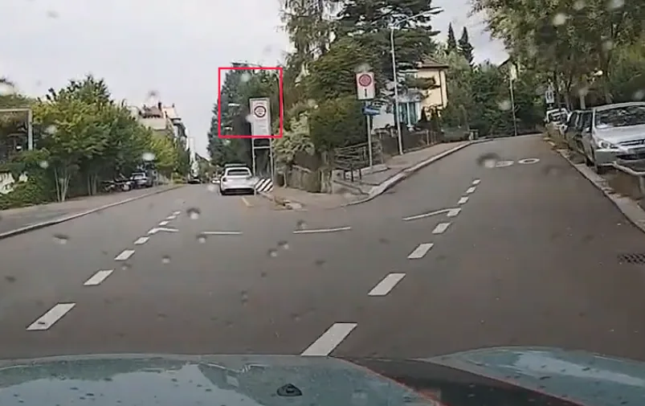
- 这里的
30 Zone 结束路标非常隐蔽、很难看见：
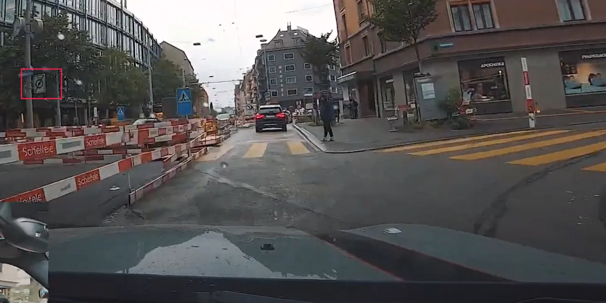
- 从 Sihlcity 去 Wollishofen 方向（Google 办公楼后面）：
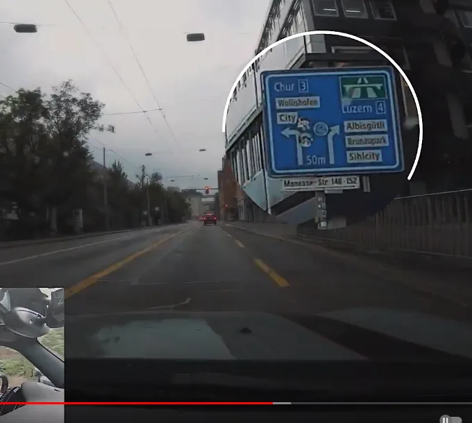
- 这个路口左拐时，可以借用 Tram 轨道（白色虚线区域）等待：
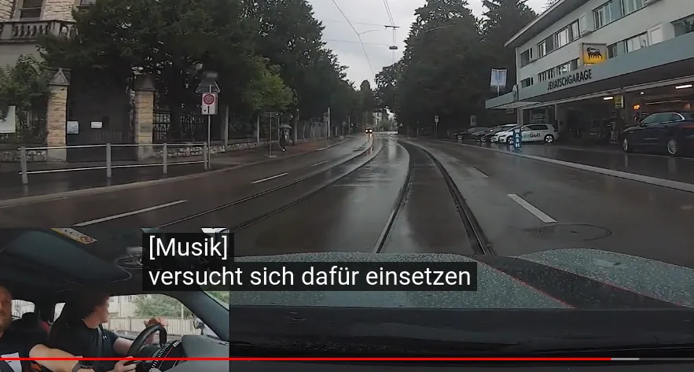
- 随后沿着湖边 Seestrasse 开往 Wollishofen。
Teil 2
- 沿着 Seestrasse 开到 Kilchberg：进桥洞前先看清楚反光镜，如果对面有大车过来绝对不能硬开进去！
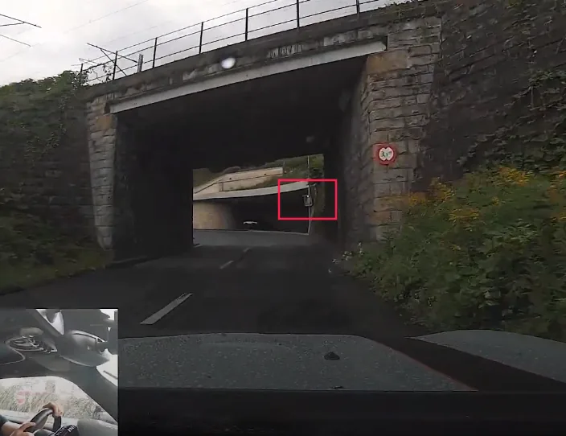
- 继续开到 Rüschlikon，随后从 Thalwil 出口附近汇入 Autobahn 返回 STVA：
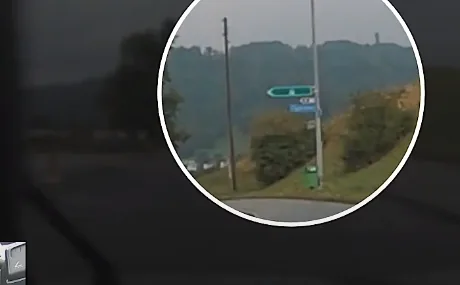
路线 3：Jasmin（Enge → Sihlcity → Wollishofen → Kilchberg → 高速 → Wollishofen）
路线概览：Enge -> Sihlcity -> Wollishofen -> Kilchberg -> Thalwil/Rüschlikon Autobahn -> Wollishofen
Teil 1
- 一个非常不明显的死路（Sackgasse / 禁止通行）：
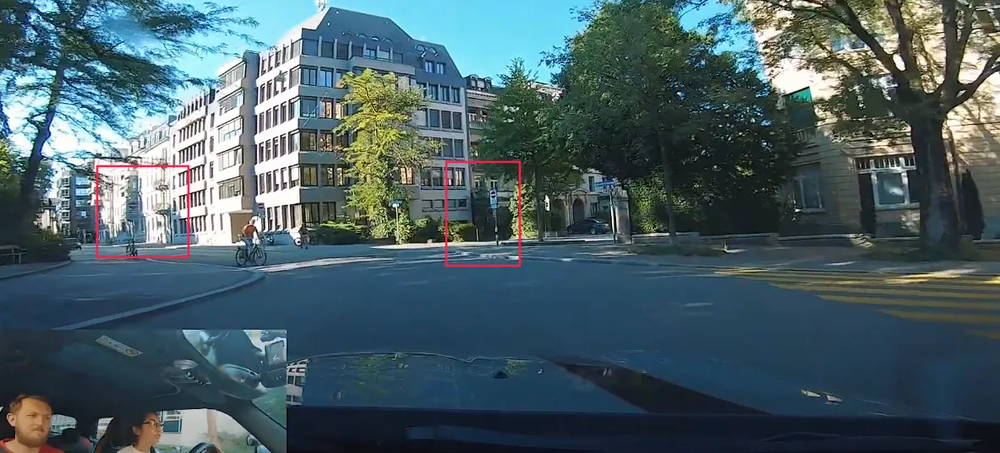
- 在 Enge 附近左拐，可以在 Tram 轨道上停着等待对向车流：
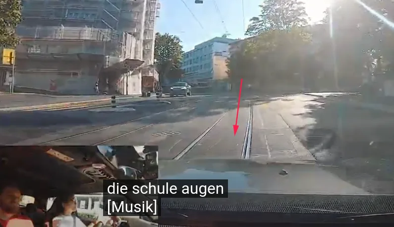
- 拐到 Enge 附近教堂的路上：
- 下坡时注意前方的死路标志：
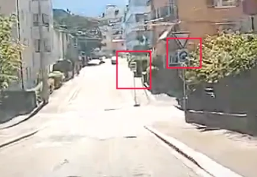
- Sihlcity 路口：地面是斜 45 度方向的导流箭头，顺着走不用打转向灯（Blinken）：
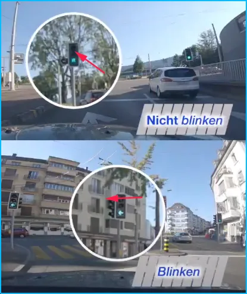
- 沿高速旁边的
60限速路往 Luzern 方向开，然后往 Wollishofen 拐入（后续进入 Kilchberg 路段有非常多 Right Priority）：
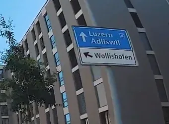
Teil 2
- Kilchberg 刚出 30 Zone 的 Right Priority：
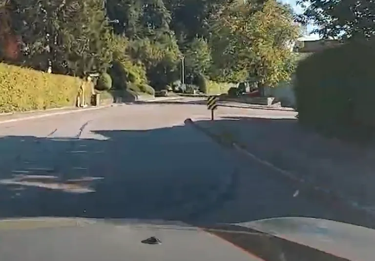
- Kilchberg 周日限行路段：注意看辅助牌，这条路只是周日禁止通行，工作日路考是可以正常开的！
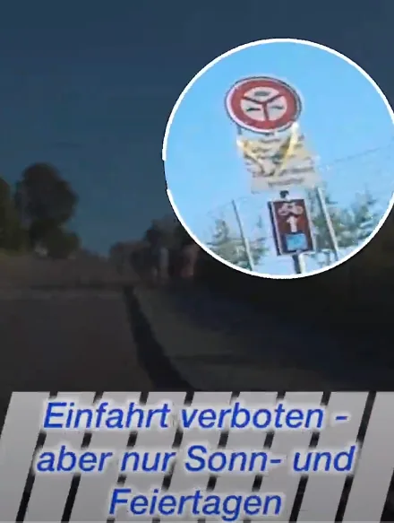
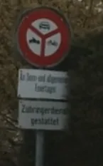
- Kilchberg 沿湖路段三个极易漏看的 Right Priority：
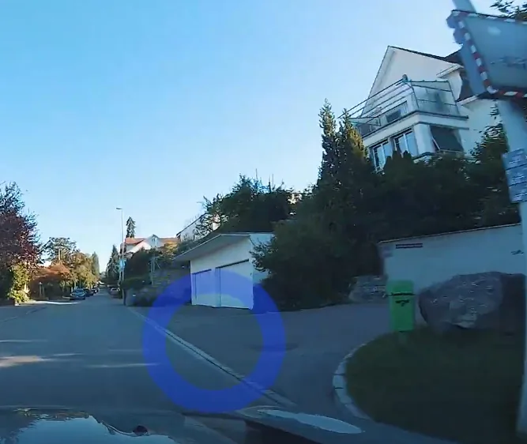
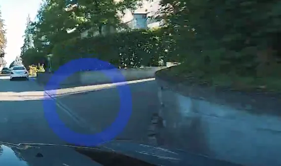
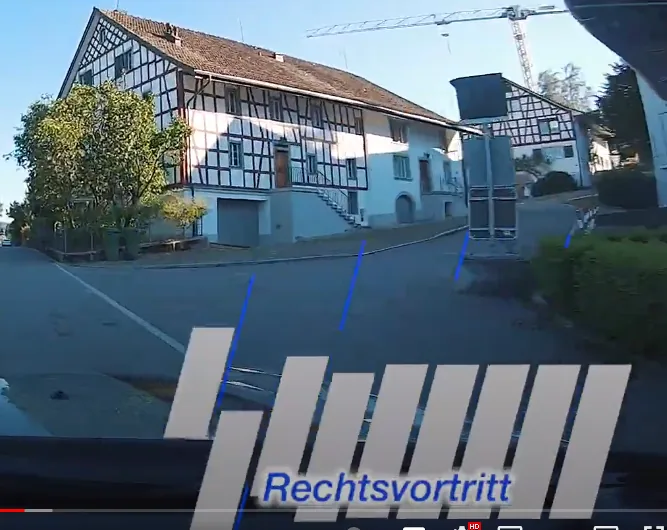
- 从 Thalwil / Rüschlikon 上 Autobahn，在 Wollishofen 下高速：Wollishofen 这个路口直走需要打左转向灯，并且在铁轨区域等待观察！
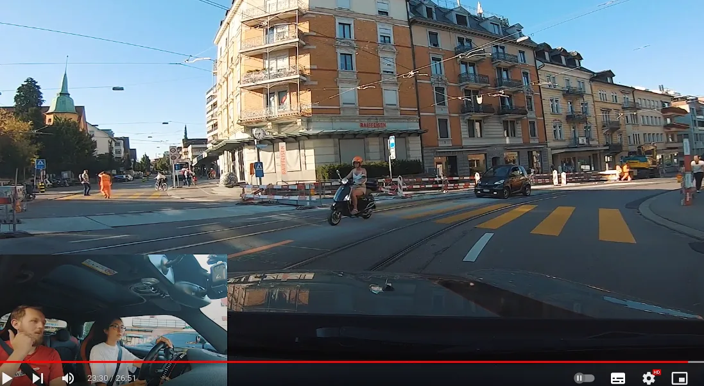
路线 4：Julien（Enge → Sihlcity → Thalwil → Lindt → Spital → Wollishofen → Enge）
路线概览：Enge -> Sihlcity -> Autobahn (Chur) -> Thalwil -> Richtung Lindt -> Richtung Spital -> Wollishofen -> Enge
Teil 1
- Enge → Sihlcity → 上 A3 高速（Chur 方向）：在看到高速 80 标志之前，前面一直是限速 60，千万别提前超速！
- Thalwil 下高速后，考官指令跟着 Richtung Lindt 路牌开（注意下高速后限速是 60）：
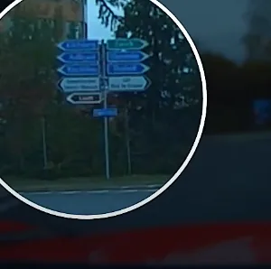
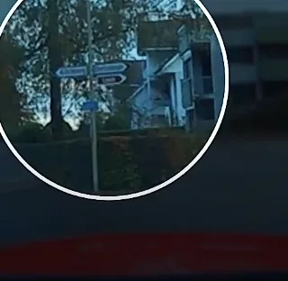
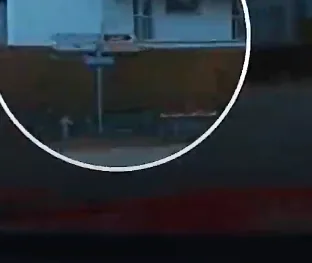
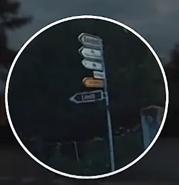
- 遇到临时施工红绿灯：等待时间较长时记得关闭引擎（熄火环保要求）！
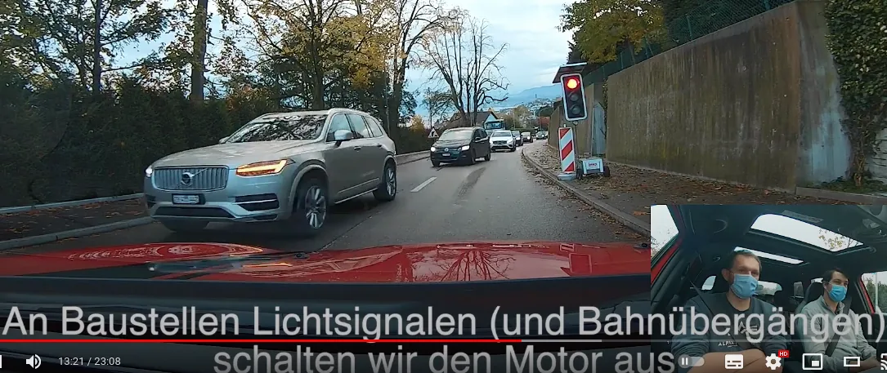
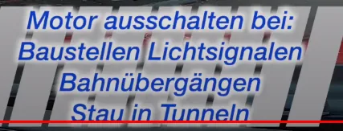
Teil 2
- 跟着 Richtung Spital 路牌开（这一段考官最喜欢考“看路牌找路”，Spital 路牌经常藏在左侧栏杆或很远的位置）：
- 在一个路口的左边栏杆上：
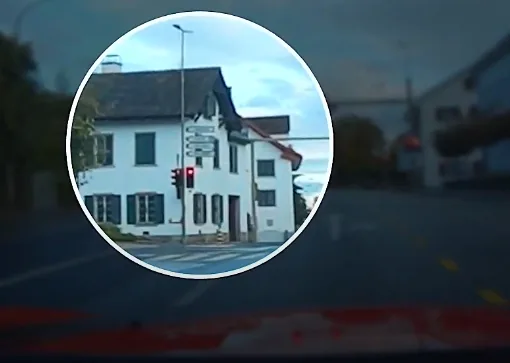
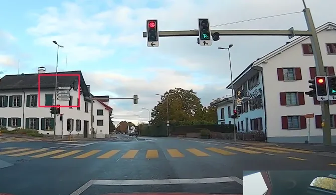
- 在一个大路口的左边栏杆上：
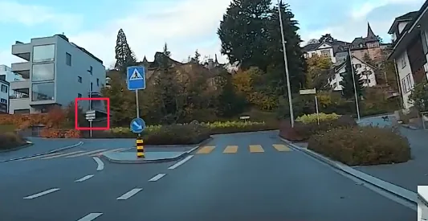
- 在一个 Right of Way 的前头：
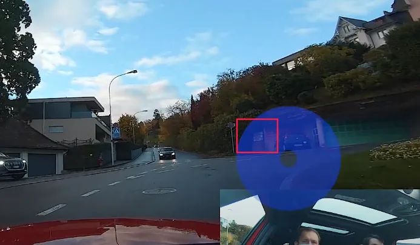
- 在另一个路口前面老远的位置：
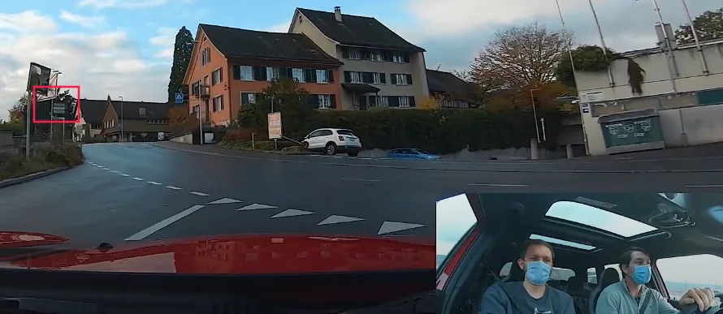
- 过桥以后又在路左边的杆子上：
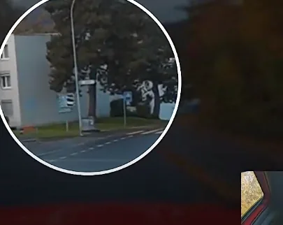
- 最后还是在一个大路口的左边杆子上：
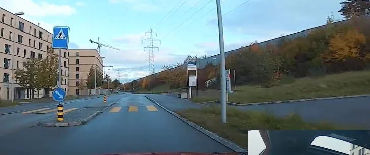
- Kilchberg 前方右侧优先预警牌：
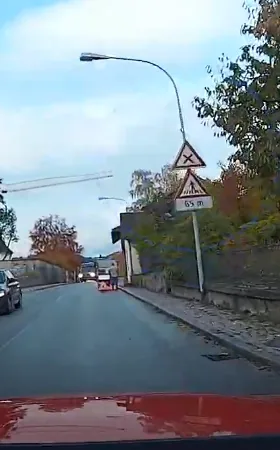
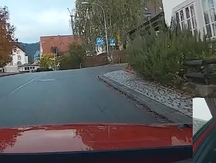
- Wollishofen：拐进小路做停车 + 掉头（Wenden），注意这里是超长
30 Zone；随后这个路口直走需要打转向灯（Indicator），紧接着的 Right of Way 可以借助路边凸面镜观察，最后返回 Enge：
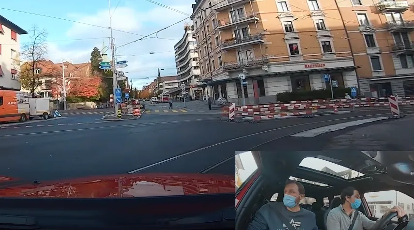
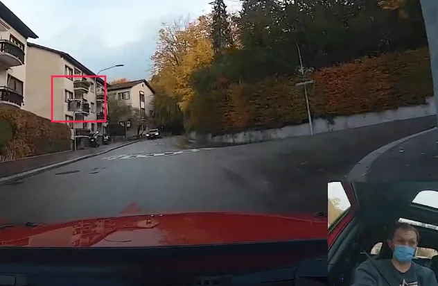
路线 5：Paul（STVA 右转 → Thalwil → Kilchberg → Wollishofen → 高速 → STVA）
路线概览：STVA (R) -> Autobahn (Chur) -> Thalwil -> Kilchberg -> Wollishofen -> Autobahn -> Brunau -> STVA
Teil 1
- 避让公交车盲区：左边有公交车停靠或慢行时千万不要盲目超车，公交车车头前方随时可能有人过人行横道，最好与公交车保持平行减速或拉开距离观察！
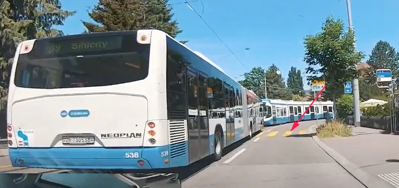
- 上高速（Chur 方向）：这个分叉路口要稳稳保持在自己的车道（Spur）内：
- Thalwil → Kilchberg 超自行车：超过自行车以后，一定要先在内后视镜里完整看到自行车，再缓缓回到原车道！
- Kilchberg 刚进 30 Zone 的 Right Priority：
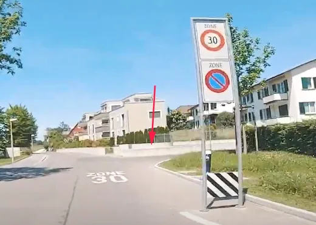
Teil 2
- Kilchberg 窄路控速：有些住宅区小路很窄且两侧有灌木丛挡住视线，即使不是
30 Zone也千万不要开太快。 - 靠右再左拐：这个地方左拐同样要从右侧出口位置再左拐：
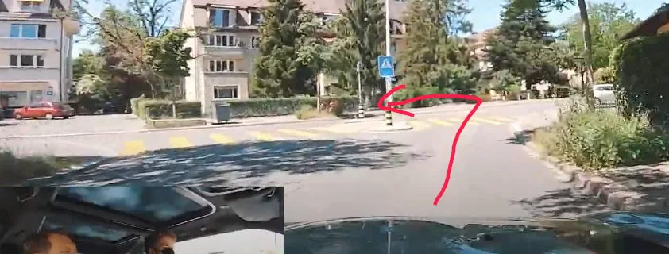
- 从 Wollishofen 上高速回 Zürich City：
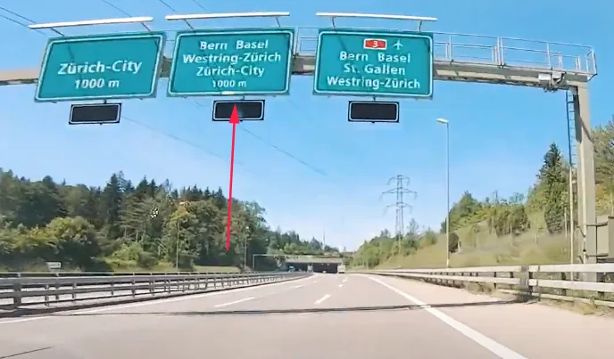
- Brunau → STVA（Albisgütli）：
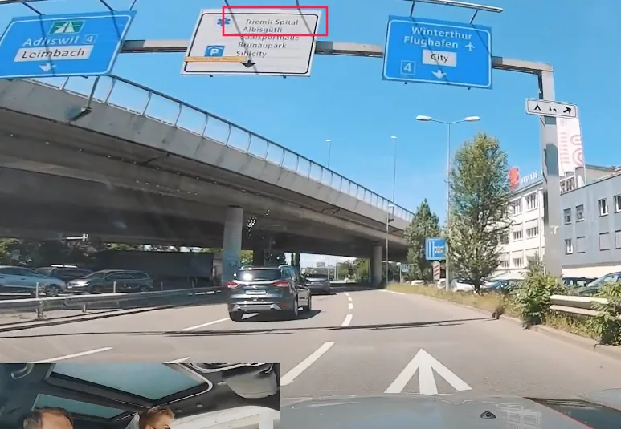
- 回 STVA 前的 Right Priority：注意看地面标线，需要停在铁轨处礼让观察：
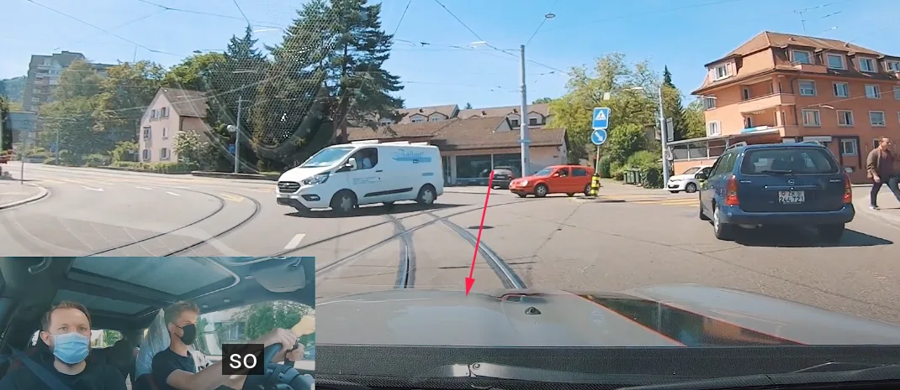
Part 5 of series «瑞士学车记»：
- 瑞士学车记1 - 国内驾照换瑞士驾照
- 瑞士学车记2 - 瑞士驾照理论考试与交规备考
- 瑞士学车记3.1 - 苏黎世路考通用交规、停车要领与常见路标
- 瑞士学车记3.2 - 苏黎世 STVA 路考路线复盘：教练带练高频路段（Markus）
- 瑞士学车记3.3 - 苏黎世 STVA 路考路线复盘：湖西岸与 A3 高速片区（Wollishofen / Kilchberg / Thalwil）
- 瑞士学车记3.4 - 苏黎世 STVA 路考路线复盘：Sihltal 河谷片区（Leimbach / Adliswil / Langnau / Brunau）
- 瑞士学车记3.5 - 苏黎世 STVA 路考路线复盘：西线山区与市中心片区（Birmensdorf / Uitikon / Wettswil / Zoo）
- 瑞士学车记4 - 拿照实战：沿湖 Seestrasse 往返苏黎世大学医院（USZ）路线记录
Disqus 留言